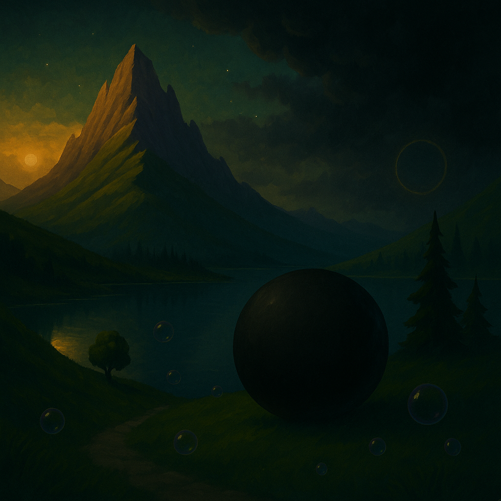

Avaleht
Kaart
Uudised
Tegelased
Mullid kogunevad hirmunult, kardavad VarjuMulli ja hakkavad üksteisega tülitsema. Portaal tumeneb, valgus kustub ja Orbioni maailm jääb vaikseks ning kurvaks.
Lõpp: maailm sulgub ja rõõm kaob.

Tagasi kodulehele